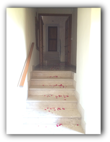
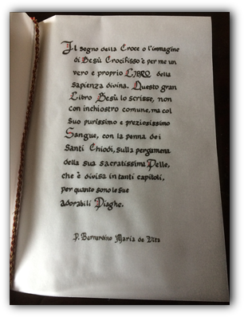

| contatti | dove siamo | |||
| Monastero di Santa Chiara Via Malintoppa 12 01020 Acquapendente (VT) info@monasterodiacquapendente.it |


L’esperienza contemplativa, la conformazione al Crocifisso povero, la povertà di Betlemme rendono la nostra fraternità una scelta evangelica autentica, che nella clausura papale esprime la totalità dell’amore per ripetere l’esperienza della primitiva fraternità francescana, “conservando l’unità della scambievole carità, vincolo di perfezione”, come insegna la nostra Madre Santa Chiara.
Nascoste con Cristo in Dio (Col. 3,3), nel mistero del “piccolo chiostro del santo seno” (Lett. 3 di S. Chiara a S. Agnese) di Maria, viviamo in clausura come mezzo privilegiato che ci permette di essere "cristificate", e come dimensione dell’altissima povertà. La nostra vita evangelica, oltre ad arricchirsi alle fonti ispirative dei Fondatori del nostro Ordine, San Francesco e Santa Chiara, attinge anche il suo carattere mariano nella vita e negli scritti di San Massimiliano M. Kolbe.
Nascoste con Cristo in Dio (Col. 3,3), nel mistero del “piccolo chiostro del santo seno” (Lett. 3 di S. Chiara a S. Agnese) di Maria, viviamo in clausura come mezzo privilegiato che ci permette di essere "cristificate", e come dimensione dell’altissima povertà. La nostra vita evangelica, oltre ad arricchirsi alle fonti ispirative dei Fondatori del nostro Ordine, San Francesco e Santa Chiara, attinge anche il suo carattere mariano nella vita e negli scritti di San Massimiliano M. Kolbe.
La castità consacrata, testimonianza dell’amore sponsale per Cristo, la “povertà e l’umiltà del Signore Gesù e della Sua Santissima Madre, vissuta come espropriazione totale, l’obbedienza “fino alla morte”, chiamata dal Serafico Padre “sorella della carità”, la clausura papale come vita che si nutre unicamente di Dio, “unico necessario” e che per tradizione propria dell’Ordine è assunta con forza di voto, sono i punti fondamentali della nostra spiritualità.
Ma in modo speciale, la Clarissa dell’Immacolata si conforma a Cristo attraverso la consacrazione all’Immacolata “illimitata, incondizionata e irrevocabile” (San Massimiliano M. Kolbe) e nell’impegno apostolico di far conoscere, amare, imitare e glorificare l’Immacolata, attraverso la preghiera continua, l’offerta di sé e il sacrificio di lode.
La Sacra Liturgia, con cui le Sorelle lodano Dio nel cuore della Chiesa, è celebrata ogni giorno in lingua latina, nella forma propria della tradizione del nostro Monastero, e vuole essere il centro e il culmine di tutta la vita della fraternità. Il silenzio, la penitenza e la comunione fraterna, che con la preghiera di suffragio estende i vincoli tra le Sorelle anche oltre la morte, completano la nostra forma di vita.


© 2014 - 2019